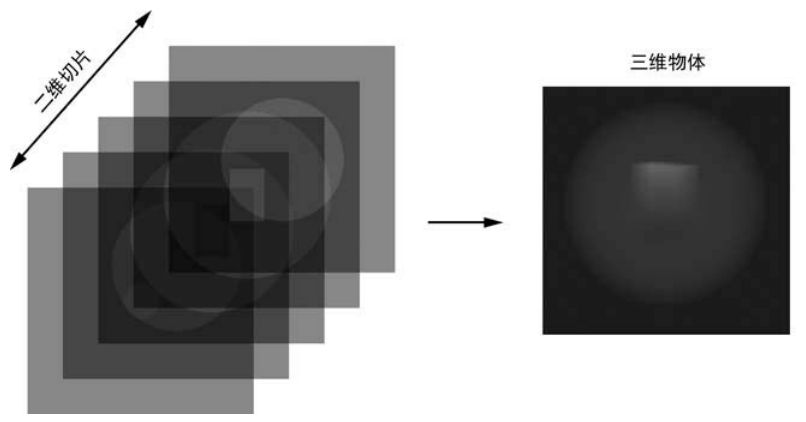
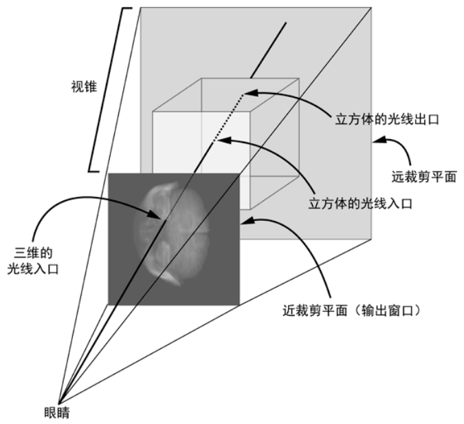
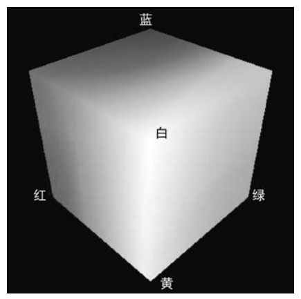
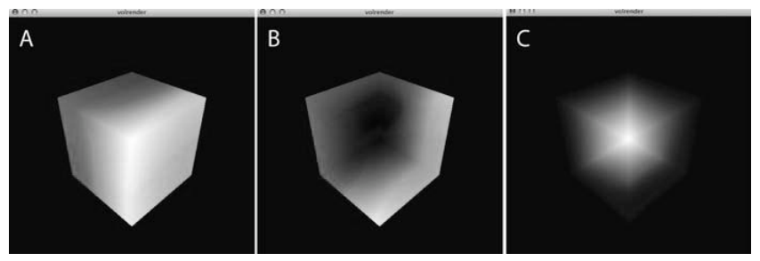
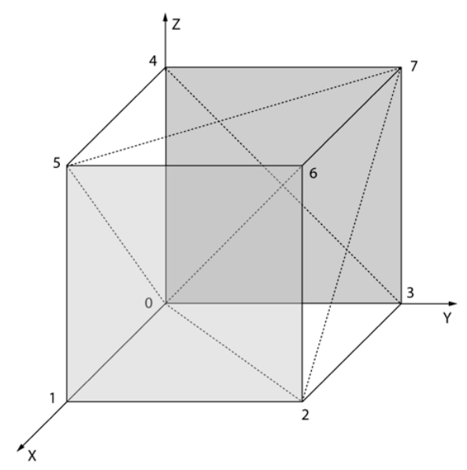
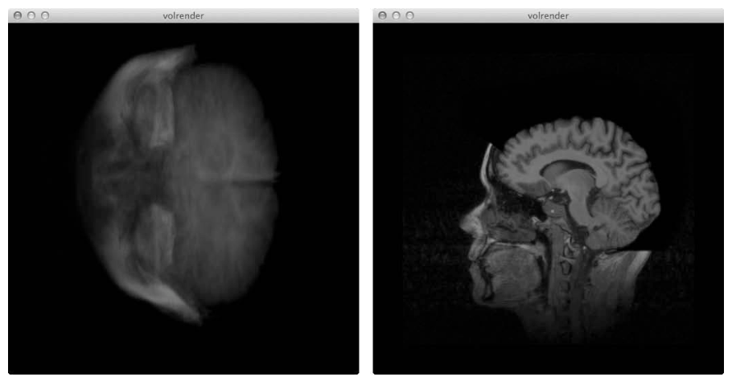

第 11 章 体渲染#
本章解决：MRI 和 CT 扫描产生的体数据——一组表示三维物体截面的二维图像——如何在屏幕上变成可透视的三维图像。答案是体光线投射（volume ray casting）：对输出图像的每个像素发射一束光线，穿过离散的三维数据网格，按固定间隔采样并把样本"合成"成最终颜色；全部计算写进 GLSL 片段着色器，交给 GPU 并行完成。全章的灵魂是"彩色立方体"技巧：立方体上每点的颜色等于它的三维坐标，背面渲染减去正面渲染就直接得到每条光线的方向向量。 承上启下：第 9 章的 OpenGL 脚手架（VBO/VAO、着色器、GLFW 窗口）与第 10 章的相机模型在这里全部复用，新学两件武器：帧缓冲对象（FBO，把一次渲染的结果存进纹理）和三维纹理。渲染哲学发生质变——从"逐对象画三角形"转向"逐像素算光线"，这是全书算法的压轴。
MRI 和 CT 扫描这样的诊断过程会创建体数据，它由一组二维图像来表示通过三维物体的截面。体绘制（volume rendering）是一种计算机图形技术，利用这种类型的体数据来构造三维图像。虽然体绘制通常用于分析医学扫描，但也可以用于地质、考古和分子生物学等学科，生成三维科学可视化效果。
由 MRI 和 CT 扫描记录的数据通常采取 \(N_x \times N_y \times N_z\) 的三维网格形式，或 \(N_z\) 个二维"切片"——其中每个切片是大小为 \(N_x \times N_y\) 的图像。体绘制算法采用某种类型的透明度，来展示采集切片数据，并采用各种技术来强调被渲染物体中关注的部分。
本项目将探讨名为"体光线投射"的体绘制算法，它充分利用图形处理单元（GPU），用 OpenGL 着色语言（GLSL）的着色器来进行计算：代码针对屏幕上的每个像素执行，并利用 GPU 有效地进行并行计算。利用二维图像文件夹中包含的三维数据集切片，用体光线投射算法构建体渲染图像；同时实现一种显示 x、y、z 方向二维切片数据的方法，用户可以通过箭头键来滚动切片；键盘命令让用户在三维渲染和二维切片之间切换。
11.0 本章导图#
11.1 工作原理#
有许多方式来渲染三维数据集。本项目将使用体光线投射的方法，它是基于图像的渲染技术（image-order rendering），从二维切片逐个像素地生成最终图像。与此形成对比的是，典型的三维渲染方法是基于对象的（object-based）：它们开始用三维对象表示，然后应用变换来生成投射的二维图像中的像素。
在本项目的体光线投射方法中，对于输出图像中的每个像素，一束光线射入离散的三维体数据集，其通常表示为一个长方体。随着光线穿过物体，数据以一定的间隔采样，样本被组合（或"合成"）来计算最终图像的颜色值或强度——你可以认为这个过程类似于堆叠一些透明胶片，将它们放在强光下，看到所有胶片组合的效果。
体光线投射渲染的实现通常还会使用一些技术，如采用梯度改进最终渲染的外观、用过滤来分离三维特征、用空间优化技术以提高速度，但本项目只实现基本的光线投射算法，通过 X 射线投射合成最终图像。这一实现主要基于 2003 年 Kruger 和 Westermann 在该主题上的开创性论文（"Acceleration Techniques for GPU-based Volume Rendering"，IEEE Visualization 2003）。
拓展：两类渲染的分工
基于对象的渲染（第 9、10 章的项目）回答"这个几何体长什么样"；基于图像的渲染回答"每条视线穿过了什么"。体数据没有传统意义上的几何表面——它是一个填满数值的三维网格——所以从对象出发没得画，从每条视线出发沿路采样才是自然做法。射线步进（ray marching）是它的通用名。
11.1.1 数据格式#
本项目使用来自斯坦福体数据档案（Stanford Volume Data Archive）的三维扫描医学数据（http://graphics.stanford.edu/data/voldata/ ）。该档案提供了一些极好的三维医学数据集的 TIFF 图像（包括 CT 和 MRI），每张图像表示该物体的一个二维横截面。程序读入文件夹中的这些图像，作为 OpenGL 三维纹理。这有点像堆叠一系列二维图像，形成一个长方体，如图 11.1 所示。

回顾第 9 章，OpenGL 中的二维纹理由一个二维坐标 \((s, t)\) 定位。类似地，三维纹理用三维纹理坐标定位，形如 \((s, t, p)\)。将体数据保存为三维纹理，可以快速访问数据，并提供光线投射方案所需的插值。
拓展：'所需的插值'从哪来
三维纹理配合 GL_LINEAR 过滤时，采样点落在体素之间，OpenGL 会对周围 8 个相邻体素做三线性插值（trilinear interpolation）后返回。光线步进的采样点几乎从不正好落在体素中心，这块插值由硬件免费提供——不用在着色器里自己写任何插值代码。
11.1.2 生成光线#
项目的目标是生成三维体数据的透视投影，如图 11.2 所示。图 11.2 展示了 OpenGL 视锥（第 9 章讨论过）：来自眼睛的光线从近裁剪平面进入此锥体，通过立方状的物体（其中包含体数据），并从后面的远裁剪平面出去。

为了实现光线投射，需要生成进入物体的光线。对于输出窗口中的每个像素，生成一个向量 \(R\)，它进入这个作为单位立方体的物体（作者称之为彩色立方体）：立方体在坐标 \((0, 0, 0)\) 和 \((1, 1, 1)\) 之间，其中每个点的颜色 RGB 值等于它的三维坐标。原点颜色为 (0, 0, 0)，即黑色；(1, 0, 0) 角是红色，与原点相对的顶点颜色为 (1, 1, 1)，即白色（图 11.3）。

注意：两种等效的颜色表示
在 OpenGL 中，颜色可以表示为一串 8 位无符号值 \((r, g, b)\)，其中 \(r\)、\(g\) 和 \(b\) 的范围是 [0, 255]；也可以表示为 32 位浮点值 \((r, g, b)\)，范围是 [0.0, 1.0]。两种表示等效：前一种的红色 (255, 0, 0) 等同于后一种的 (1.0, 0.0, 0.0)。本章的彩色立方体用的是浮点表示——正因为坐标本身就是 [0, 1] 的浮点数，才能让"颜色 = 坐标"成立。
要绘制立方体，先用 OpenGL 图元 GL_TRIANGLES 绘制它的 6 个面，然后确定每个顶点的颜色——在多边形光栅化、生成顶点之间的颜色时，利用 OpenGL 提供的插值。图 11.4（A）展示了立方体的三个正面；图 11.4（B）将 OpenGL 设置为剔除正面，绘制了立方体的背面。
关键一步来了：如果从图 11.4（B）的颜色中减去图 11.4（A）的颜色，即从 \((r, g, b)_{\text{back}}\) 减去 \((r, g, b)_{\text{front}}\)，实际上就计算了一组向量——从立方体的正面指向背面。原因很直白：立方体上每点的颜色与三维坐标相同，两个点的颜色相减就是两个点的坐标相减：
图 11.4（C）展示了结果（为了展示，负值已翻转为正，因为负数不能直接显示为颜色）。读取图 11.4（C）中一个像素的颜色值 \((r, g, b)\)，就得到 \((r_x, r_y, r_z)\) 坐标，即在这一点穿透物体的光线。有了投射光线后，将它们渲染成一张图（二维纹理），稍后与 OpenGL 的帧缓冲对象（FBO）功能一起使用——产生这个纹理之后，可以在实现光线投射算法的着色器内访问它。

**GPU 中的光线投射。**实现光线投射算法时分两遍渲染：首先将彩色立方体的背面绘制到 FBO；接着将正面绘制在屏幕上。光线投射算法的主要部分发生在片段着色器中——针对输出的每个像素执行：光线的计算用颜色立方体的背面颜色减去传入片段的正面颜色（背面颜色从纹理中读取），然后将计算好的光线累加，并利用着色器中可用的三维体纹理数据，计算最终的像素值。
拓展：为什么要两遍、为什么要 FBO
一次绘制中，片段着色器拿不到"另一次绘制"的结果。背面颜色必须先渲染进一张纹理（FBO 的颜色附件），第二遍渲染正面时才能用 texture() 采样读回。正面颜色则不必绕道纹理——第二遍渲染正面时，插值后的顶点颜色 vColor 直接传进片段着色器就是入口坐标。所以"背面进纹理、正面上屏幕"，一进一出刚好配对。
背面剔除。在 OpenGL 中，画四边形这样的图元时，指定顶点的顺序很重要。默认情况下，OpenGL 假定用 GL_CCW（逆时针）顺序——逆时针顺序的图元，法矢量将指向多边形的"外面"。绘制封闭区域的几何图形（如立方体）时，这就有关系了：为了优化渲染，不用绘制看不见的面，只要打开 OpenGL 的背面剔除（back-face culling）——计算观看方向向量与多边形法向量的点积，朝向背面的多边形点积为负，这些面可以丢弃。OpenGL 也提供了一种简单的方法来做相反的事，即正面剔除（front-face culling）——这正是本算法要用到的（把正面剔除掉、只剩背面，渲染进 FBO）。
**显示二维切片。**除了三维渲染，也可以显示数据的二维切片：从三维数据中提取垂直于 x 轴、y 轴或 z 轴的二维横截面，将它作为一个四边形的纹理。因为物体保存为三维纹理，很容易通过指定纹理坐标 \((s, t, p)\) 得到所需的数据——OpenGL 内置的纹理插值可以给出三维纹理内任意位置的纹理值。
11.1.3 显示 OpenGL 窗口#
像其他 OpenGL 项目一样，本项目用 GLFW 库来显示 OpenGL 窗口，用处理程序来绘制、响应调整窗口大小和键盘事件。键盘事件负责在体渲染和切片渲染之间切换，以及实现穿过三维数据的旋转和切片。
11.2 所需模块#
用 PyOpenGL 进行渲染（流行的 OpenGL 的 Python 绑定），用 numpy 数组表示三维坐标和变换矩阵；窗口库与工具函数与第 9、10 章相同。
| 模块 | 用途 |
|---|---|
| PyOpenGL | OpenGL 的 Python 绑定：三维纹理、FBO、剔除、绘制等全部渲染 API |
| numpy | 三维坐标与变换矩阵；体数据拼接成大数组 |
| glfw | 窗口、OpenGL 上下文、键盘回调（主程序） |
| glutils | 原书自带：loadShaders / perspective / lookAt / ortho |
Python 3 适配：本章代码的现代化
原书基于 Python 3.3，本章要动手改的点：(1) uniform 名必须传 bytes 字面量（如 b"uPMatrix"）——这是 PyOpenGL 对 C 字符串的要求，原书已正确这么写，保持即可；(2) 原书多处用 is 比较常量（count is 0、key is glfw.GLFW_KEY_ESCAPE、action is glfw.GLFW_PRESS），现代 Python 应改为 ==（Python 3.8 起对整数用 is 会直接发 SyntaxWarning）；(3) numpy.array(data, numpy.float32) 的旧式第二位置参数与 np.array(list(...), 'B') 的 typecode，统一改写为 dtype=numpy.uint8；(4) 原书 11.6.2 节摘录里残留 Python 2 的 print "..." 语句，完整清单（11.7 节）已是 print(...)。
11.3 项目代码概述#
流程：首先从体数据生成三维纹理；接下来分析颜色立方体技术——生成从眼睛指向物体的光线，这是实现体光线投射算法的关键概念——并定义立方体的几何形状、绘制该立方体的背面和正面；然后探索体积光线投射算法及相关的顶点和片段着色器；最后实现体数据的二维切片。
该项目有 7 个 Python 文件：
| 文件 | 职责 |
|---|---|
| glutils.py | OpenGL 着色器、变换等工具方法（第 9 章引入，见 GitHub common/ 目录） |
| makedata.py | 创建测试体数据的工具方法（本章不展开，见 GitHub volrender/ 目录） |
| raycast.py | 实现 RayCastRender 类，用于光线投射 |
| raycube.py | 实现 RayCastRender 中使用的 RayCube 类 |
| slicerender.py | 实现 SliceRender 类，用于体数据的二维切片 |
| volreader.py | 工具方法：读取体数据作为 OpenGL 的三维纹理 |
| volrender.py | 主文件：创建 GLFW 窗口和渲染器 |
除了 makedata.py 与 glutils.py 两个文件之外，本章介绍其余全部文件。
11.4 生成三维纹理#
第一步是从包含图像的文件夹中读取体数据。loadVolume() 是本章数据管线的全部（完整文件见 11.5 节），以下按 Python 3 改写并加注释：
# ===== 书 11.4 节：loadVolume——从切片文件夹到三维纹理 =====
def loadVolume(dirName):
"""read volume from directory as a 3D texture"""
# list images in directory
files = sorted(os.listdir(dirName)) # ① 列目录并排序：切片顺序即深度方向
print('loading images from: %s' % dirName)
imgDataList = []
count = 0
width, height = 0, 0
for file in files:
file_path = os.path.abspath(os.path.join(dirName, file)) # ② 绝对路径拼接
try:
# read image
img = Image.open(file_path) # ③ PIL 打开图像
imgData = np.array(img.getdata(), dtype=np.uint8) # 8 位灰度平铺成一维
# check if all images are of the same size
if count == 0: # ④ 第一张：记录基准宽高
width, height = img.size[0], img.size[1]
imgDataList.append(imgData)
elif (width, height) == (img.size[0], img.size[1]): # ⑤ 后续必须一致
imgDataList.append(imgData)
else:
print('mismatch')
raise RuntimeError("image size mismatch") # 原书拼作 RunTimeError
count += 1
except OSError:
# skip
print('Invalid image: %s' % file_path) # 非图像文件：跳过
# load image data into single array
depth = count # ⑥ 切片数 = 深度 Nz
data = np.concatenate(imgDataList) # 所有切片拼成一个大数组
print('volume data dims: %d %d %d' % (width, height, depth))
# load data into 3D texture
texture = glGenTextures(1) # ⑦ 创建纹理并上传
glPixelStorei(GL_UNPACK_ALIGNMENT, 1) # 单字节灰度行，1 字节对齐
glBindTexture(GL_TEXTURE_3D, texture)
glTexParameterf(GL_TEXTURE_3D, GL_TEXTURE_WRAP_S, GL_CLAMP_TO_EDGE)
glTexParameterf(GL_TEXTURE_3D, GL_TEXTURE_WRAP_T, GL_CLAMP_TO_EDGE)
glTexParameterf(GL_TEXTURE_3D, GL_TEXTURE_WRAP_R, GL_CLAMP_TO_EDGE) # p 方向
glTexParameterf(GL_TEXTURE_3D, GL_TEXTURE_MAG_FILTER, GL_LINEAR)
glTexParameterf(GL_TEXTURE_3D, GL_TEXTURE_MIN_FILTER, GL_LINEAR)
glTexImage3D(GL_TEXTURE_3D, 0, GL_RED, # 单通道 8 位内部格式
width, height, depth, 0,
GL_RED, GL_UNSIGNED_BYTE, data)
# return texture
return (texture, width, height, depth) # ⑧ 纹理 ID + 三个维度
loadVolume() 的工作流逐条过：
- ① 用 os 模块的
listdir()列出给定目录中的文件。必须sorted()——os.listdir的顺序在多数文件系统上是任意的，切片顺序乱了三维纹理的深度方向就乱了。 - ②
os.path.abspath()+os.path.join()把文件名添加到目录，不必处理相对文件路径和操作系统特定的路径约定（Python 代码中遍历文件目录的常用习惯用法）。 - ③ 用 Python 图像库（PIL）的
Image类把图像加载为 8 位 numpy 数组；指定的文件不是图像或加载失败时抛异常，捕获后打印并跳过。 - ④⑤ 图像要加载成三维纹理，必须确保所有切片尺寸（宽 × 高）一致：保存第一张图像的尺寸作为基准，与新传入的图像比较。
- ⑥ 所有图像加载为单独的数组后，用 numpy 的
concatenate()把它们连接起来，创建包含三维数据的最终数组。 - ⑦ 创建 OpenGL 纹理，设置过滤与拆包参数，再用
glTexImage3D()把三维数据数组加载为纹理。格式用 GL_RED、数据格式用 GL_UNSIGNED_BYTE——因为数据中每个像素只有一个 8 位值。GL_UNPACK_ALIGNMENT设为 1：灰度图每行width字节，不必是 4 的倍数，默认的 4 字节对齐会把行边界读错。 - ⑧ 返回 OpenGL 纹理 ID 和三维纹理的尺寸 \((N_x, N_y, N_z)\)——调用方全靠这个元组。
原书笔误与代码缺陷：RunTimeError 被裸 except 吞掉
原书代码写的是 raise RunTimeError(...)——真实类型名是 RuntimeError（大写 T 是笔误），照抄会 NameError。更隐蔽的是：这个 raise 原书写在 try: 块内，而块尾的 except: 是裸捕获——它把故意抛出的 RuntimeError 也吞了，"尺寸不一致就中止程序"退化成"打印一条 Invalid image 后继续"，坏数据静默混过校验。上面的改写做了两件事：RunTimeError 改为 RuntimeError，裸 except: 改为 except OSError（只跳过打不开的文件），让尺寸错误真正抛出。裸 except 还会连 KeyboardInterrupt 一起吞，本来就该避免。
原书摘录的嵌套结构与 is 比较
原书 11.4 节摘录中 if/else 的缩进嵌套排版有误（两个 else 挤在同一层，语法上不成立），正确的 if/elif/else 结构以 11.5 节完整清单为准，上面已按此改写。count is 0 等常量比较请写 ==（见 11.2 节的适配说明）。
11.5 完整的三维纹理代码#
volreader.py 的完整清单 = 上面的 loadVolume() + 一个二维纹理工具 loadTexture()。完整代码见原书 11.5 节，或从 GitHub 仓库 electronut/pp 的 volrender/ 目录下载。
loadTexture() 与第 9 章的版本同构：打开图像、取数据、建纹理、设参数、glTexImage2D 上传为 GL_RGBA 二维纹理。本章的光线投射没有用到它，属于备用工具：
# ===== 书 11.5 节：loadTexture——二维纹理工具（概括）=====
def loadTexture(filename):
img = Image.open(filename)
img_data = np.array(list(img.getdata()), 'B') # 'B' = uint8 的旧式 typecode
texture = glGenTextures(1)
glPixelStorei(GL_UNPACK_ALIGNMENT, 1)
glBindTexture(GL_TEXTURE_2D, texture)
# ... 参数设置与 loadVolume 相同 ...
glTexImage2D(GL_TEXTURE_2D, 0, GL_RGBA, img.size[0], img.size[1],
0, GL_RGBA, GL_UNSIGNED_BYTE, img_data)
return texture
Python 3 适配：loadTexture 的两处旧写法
(1) np.array(list(img.getdata()), 'B')：'B' 是旧式数组 typecode，现代写法是 dtype=np.uint8；外层的 list(...) 也没必要——np.asarray(img, dtype=np.uint8) 一步到位还更快（getdata() 逐像素走 Python 迭代，大图很慢）。(2) 原书完整清单顶部还 from scipy import misc 导入了没被使用的模块（历史遗留）：不装 scipy 就 ImportError，本章代码实际用不到它，删掉即可。
11.6 生成光线#
生成光线的代码封装在 RayCube 类中。它负责绘制彩色立方体，并提供把立方体的背面绘制到 FBO（纹理）、把正面绘制到屏幕上的方法。要查看完整的 raycube.py，请跳到 11.7 节。
先定义类使用的着色器：
# ===== 书 11.6 节：RayCube 的着色器 =====
strVS = """
#version 330 core
layout(location = 1) in vec3 cubePos; // 顶点位置（属性位置 1）
layout(location = 2) in vec3 cubeCol; // 顶点颜色（属性位置 2）
uniform mat4 uMVMatrix;
uniform mat4 uPMatrix;
out vec4 vColor; // 下传给片段着色器（插值）
void main()
{
// set back-face color
vColor = vec4(cubeCol.rgb, 1.0); // 颜色 = 位置，alpha 给 1
// transformed position
vec4 newPos = vec4(cubePos.xyz, 1.0);
// set position
gl_Position = uPMatrix * uMVMatrix * newPos; // 标准 MVP 变换
}
"""
strFS = """
#version 330 core
in vec4 vColor;
out vec4 fragColor;
void main()
{
fragColor = vColor; // 插值后的颜色直接输出——颜色即坐标
}
"""
顶点着色器有两个输入属性：cubePos 和 cubeCol，分别访问顶点的位置和颜色值；模型视图和投影矩阵通过 uniform 变量 uMVMatrix 和 uPMatrix 传入。vColor 声明为输出——它需要传入片段着色器，在那里进行插值。片段着色器把片段颜色设置为传入的（插值后的）vColor。这个着色器本身毫无花哨，它的全部意义是把坐标当颜色画出来。
原书笔误：uniform 变量名漏了前缀
原书正文说投影矩阵通过 uniform 变量 "pMatrix" 传入，实际代码（顶点着色器与 glGetUniformLocation 调用）用的都是 uPMatrix——正文漏了 u 前缀。
11.6.1 定义颜色立方体的几何形状#
颜色立方体的几何形状在 RayCube 类中定义：
# ===== 书 11.6.1 节：颜色立方体的几何形状 =====
# cube vertices
vertices = numpy.array([ # ① 8 个顶点
0.0, 0.0, 0.0, # 0: 原点（黑）
1.0, 0.0, 0.0, # 1: 红
1.0, 1.0, 0.0, # 2: 黄
0.0, 1.0, 0.0, # 3: 绿
0.0, 0.0, 1.0, # 4: 蓝
1.0, 0.0, 1.0, # 5: 品红
1.0, 1.0, 1.0, # 6: 白
0.0, 1.0, 1.0 # 7: 青
], dtype=numpy.float32)
# cube colors
colors = numpy.array([ # ② 颜色 = 坐标（8 行与上表一一对应）
0.0, 0.0, 0.0,
1.0, 0.0, 0.0,
1.0, 1.0, 0.0,
0.0, 1.0, 0.0,
0.0, 0.0, 1.0,
1.0, 0.0, 1.0,
1.0, 1.0, 1.0,
0.0, 1.0, 1.0
], dtype=numpy.float32)
# individual triangles
indices = numpy.array([ # ③ 12 个三角形 × 3 = 36 个索引
4, 5, 7, 7, 5, 6, # 顶面 z = 1
5, 1, 6, 6, 1, 2, # 右面 x = 1
1, 0, 2, 2, 0, 3, # 底面 z = 0
0, 4, 3, 3, 4, 7, # 左面 x = 0
6, 2, 7, 7, 2, 3, # 背面 y = 1
4, 0, 5, 5, 0, 1 # 正面 y = 0
], dtype=numpy.int16)
颜色立方体有 6 个面，每个面可以绘制成两个三角形，总共 6×6（36）个顶点。但程序不是指定所有 36 个顶点，而是只指定立方体的 8 个顶点（①），再让每个顶点带一份等于自身坐标的颜色（②），然后用一个 indices 数组（③）定义 12 个三角形——每个面两个三角形，如图 11.5 所示。

接下来把顶点信息放入缓冲区：
# ===== 书 11.6.1 节：VAO 与三个缓冲区 =====
# set up vertex array object (VAO)
self.vao = glGenVertexArrays(1)
glBindVertexArray(self.vao)
# vertex buffer
self.vertexBuffer = glGenBuffers(1)
glBindBuffer(GL_ARRAY_BUFFER, self.vertexBuffer)
glBufferData(GL_ARRAY_BUFFER, 4*len(vertices), vertices, GL_STATIC_DRAW)
# vertex buffer - cube vertex colors
self.colorBuffer = glGenBuffers(1)
glBindBuffer(GL_ARRAY_BUFFER, self.colorBuffer)
glBufferData(GL_ARRAY_BUFFER, 4*len(colors), colors, GL_STATIC_DRAW)
# index buffer
self.indexBuffer = glGenBuffers(1)
glBindBuffer(GL_ELEMENT_ARRAY_BUFFER, self.indexBuffer) # ① 索引缓冲
glBufferData(GL_ELEMENT_ARRAY_BUFFER, 2*len(indices), indices,
GL_STATIC_DRAW) # ② int16 每项 2 字节
# enable attrs using the layout indices in shader
aPosLoc = 1 # 与着色器 layout(location) 对应
aColorLoc = 2
glEnableVertexAttribArray(1)
glEnableVertexAttribArray(2)
# vertex
glBindBuffer(GL_ARRAY_BUFFER, self.vertexBuffer)
glVertexAttribPointer(aPosLoc, 3, GL_FLOAT, GL_FALSE, 0, None)
# color
glBindBuffer(GL_ARRAY_BUFFER, self.colorBuffer)
glVertexAttribPointer(aColorLoc, 3, GL_FLOAT, GL_FALSE, 0, None)
# index
glBindBuffer(GL_ELEMENT_ARRAY_BUFFER, self.indexBuffer) # 索引缓冲记入 VAO
# unbind VAO
glBindVertexArray(0)
与前几个项目一样：创建并绑定 VAO，定义它管理的缓冲区。区别在 ①：indices 数组绑定到 GL_ELEMENT_ARRAY_BUFFER——这意味着缓冲区中的元素将用来索引颜色和顶点缓冲区中的数据，而不是自己当顶点数据。glBufferData 的字节数 2*len(indices) 是因为索引元素是 16 位整数（numpy.int16），每项占 2 字节；之后 glDrawElements 也要相应地传 GL_UNSIGNED_SHORT。
11.6.2 创建帧缓冲区对象#
现在跳到创建帧缓冲区对象（FBO）的方法——背面颜色就要渲染到它里面：
# ===== 书 11.6.2 节：initFBO——创建帧缓冲区对象 =====
def initFBO(self):
# create frame buffer object
self.fboHandle = glGenFramebuffers(1) # ① FBO 本体
# create texture
self.texHandle = glGenTextures(1) # ② 颜色附件：2D 纹理
# create depth buffer
self.depthHandle = glGenRenderbuffers(1) # ③ 深度附件：渲染缓冲区
# bind
glBindFramebuffer(GL_FRAMEBUFFER, self.fboHandle)
glActiveTexture(GL_TEXTURE0)
glBindTexture(GL_TEXTURE_2D, self.texHandle)
# set parameters to draw the image at different sizes
glTexParameteri(GL_TEXTURE_2D, GL_TEXTURE_MIN_FILTER, GL_LINEAR)
glTexParameteri(GL_TEXTURE_2D, GL_TEXTURE_MAG_FILTER, GL_LINEAR)
glTexParameteri(GL_TEXTURE_2D, GL_TEXTURE_WRAP_S, GL_CLAMP_TO_EDGE)
glTexParameteri(GL_TEXTURE_2D, GL_TEXTURE_WRAP_T, GL_CLAMP_TO_EDGE)
# set up texture
glTexImage2D(GL_TEXTURE_2D, 0, GL_RGBA, self.width, self.height,
0, GL_RGBA, GL_UNSIGNED_BYTE, None) # ④ 只分配存储，不填数据
# bind texture to FBO
glFramebufferTexture2D(GL_FRAMEBUFFER, GL_COLOR_ATTACHMENT0,
GL_TEXTURE_2D, self.texHandle, 0) # ⑤ 纹理挂为颜色附件
# bind
glBindRenderbuffer(GL_RENDERBUFFER, self.depthHandle)
glRenderbufferStorage(GL_RENDERBUFFER, GL_DEPTH_COMPONENT24,
self.width, self.height) # ⑥ 24 位深度
# bind depth buffer to FBO
glFramebufferRenderbuffer(GL_FRAMEBUFFER, GL_DEPTH_ATTACHMENT,
GL_RENDERBUFFER, self.depthHandle)
# check status
status = glCheckFramebufferStatus(GL_FRAMEBUFFER) # ⑦ 状态检查
if status == GL_FRAMEBUFFER_COMPLETE:
pass
elif status == GL_FRAMEBUFFER_UNSUPPORTED:
print('fbo %d unsupported' % self.fboHandle)
else:
print('fbo %d Error' % self.fboHandle)
这里创建了三样东西：帧缓冲区对象（①）、二维纹理（②）和渲染缓冲区对象（③）。在 ④ 行为纹理分配存储——数据参数传 None 表示只分配不填充；⑤ 行把纹理绑定到帧缓冲区对象作为颜色附件；⑥ 行给渲染缓冲区设置 24 位深度缓冲（GL_DEPTH_COMPONENT24）并连接到 FBO 作为深度附件。⑦ 行检查帧缓冲区的状态：FBO 配置不完整时 OpenGL 不会弹任何错误，渲染会静默失败，必须自己调 glCheckFramebufferStatus 查。只要帧缓冲区和渲染缓冲区绑定正确，之后所有的渲染将进入纹理。
拓展：颜色用纹理、深度用渲染缓冲区，为什么不一样
背面颜色之后要在光线投射着色器里 texture() 采样，所以必须是纹理；深度值只服务于背面渲染那一遍的深度测试，GPU 没人需要把它读回去——渲染缓冲区（renderbuffer）就是"不可采样的显存"，干这个更对口。GL_DEPTH_COMPONENT24 即 24 位定点深度。另外注意 FBO 纹理是 8 位 RGBA——背面颜色（光线终点坐标）会被量化到 1/255 的台阶上，对本项目的显示精度足够，但做定量分析时要知道有这层舍入。
原书摘录残留 Python 2 的 print
11.6.2 节摘录中的 print "fbo %d unsupported" % ... 是 Python 2 语法，完整清单（11.7 节）里已是 print('fbo %d unsupported' % ...)。上面代码按完整清单的写法给出。
11.6.3 渲染立方体的背面#
下面的代码渲染颜色立方体的背面：
# ===== 书 11.6.3 节：renderBackFace——背面渲染进 FBO =====
def renderBackFace(self, pMatrix, mvMatrix):
"""renders back-face of ray-cube to a texture and returns it"""
# render to FBO
glBindFramebuffer(GL_FRAMEBUFFER, self.fboHandle) # ① 渲染目标切到 FBO
# set active texture
glActiveTexture(GL_TEXTURE0)
# bind to FBO texture
glBindTexture(GL_TEXTURE_2D, self.texHandle)
# render cube with face culling enabled
self.renderCube(pMatrix, mvMatrix, self.program, True) # ② cullFace=True
# unbind texture
glBindTexture(GL_TEXTURE_2D, 0) # ③ 解绑，恢复现场
glBindFramebuffer(GL_FRAMEBUFFER, 0)
glBindRenderbuffer(GL_RENDERBUFFER, 0)
# return texture ID
return self.texHandle # ④ 交给下一阶段
在 ① 行绑定 FBO、设置活动纹理单元并绑定纹理，渲染从此进入 FBO 纹理而不是屏幕。② 行调用 renderCube()，传入面剔除标志——同一份代码靠它决定画正面还是背面；标志为 True 时背面进入 FBO 纹理。③ 行解除绑定，其他渲染代码不受影响。④ 行返回 FBO 纹理 ID，供光线投射算法的下一阶段使用。
11.6.4 渲染立方体的正面#
光线投射算法第二遍渲染时绘制颜色立方体的正面——就是调用上一节的 renderCube()，面剔除标志设为 False：
# ===== 书 11.6.4 节：renderFrontFace——正面画上屏幕 =====
def renderFrontFace(self, pMatrix, mvMatrix, program):
"""render front-face of ray-cube"""
# no face culling
self.renderCube(pMatrix, mvMatrix, program, False)
注意传入的 program 是调用方（RayCastRender）的着色器程序，不是 RayCube 自己的——正面片段上执行的是光线投射片段着色器，这是整个算法生效的位置。
11.6.5 渲染整个立方体#
renderCube() 用一个剔除标志统管正面与背面：
# ===== 书 11.6.5 节：renderCube——cullFace 标志切换正面/背面 =====
def renderCube(self, pMatrix, mvMatrix, program, cullFace):
"""renderCube uses face culling if flag set"""
glClear(GL_COLOR_BUFFER_BIT | GL_DEPTH_BUFFER_BIT)
# set shader program
glUseProgram(program)
# set projection matrix
glUniformMatrix4fv(glGetUniformLocation(program, b'uPMatrix'),
1, GL_FALSE, pMatrix)
# set modelview matrix
glUniformMatrix4fv(glGetUniformLocation(program, b'uMVMatrix'),
1, GL_FALSE, mvMatrix)
# enable face culling
glDisable(GL_CULL_FACE)
if cullFace:
glFrontFace(GL_CCW) # ① 逆时针 = 正面（默认约定，显式写出）
glCullFace(GL_FRONT) # ② 剔除的是正面 → 只剩背面
glEnable(GL_CULL_FACE)
# bind VAO
glBindVertexArray(self.vao)
# animated slice
glDrawElements(GL_TRIANGLES, self.nIndices, GL_UNSIGNED_SHORT, None) # ③
# unbind VAO
glBindVertexArray(0)
# reset cull face
if cullFace:
# disable face culling
glDisable(GL_CULL_FACE) # ④ 恢复现场
流程：清除颜色和深度缓冲区，选择着色器程序，设置变换矩阵。在 ①② 行设置面剔除——glFrontFace(GL_CCW) 声明逆时针绕向为正面（这本来就是默认值，显式写出是为了配下面的 glCullFace 读起来不迷糊），glCullFace(GL_FRONT) 表示剔除正面，于是屏幕上只剩下背面——这一段就是"背面颜色减正面颜色" trick 里"背面渲染"的实现。③ 行用 glDrawElements() 绘制：因为用索引数组渲染，索引类型对应顶点数组里的 int16，传 GL_UNSIGNED_SHORT。④ 行把剔除关掉，不留状态污染。
容易搞反的点再强调一遍：renderCube(..., cullFace=True) 的语义是"剔除正面、渲染背面"（渲染进 FBO）；cullFace=False 才是完整画立方体（正面画上屏幕）。这个布尔量的意思是"启用剔除"，不是"剔除背面"。
11.6.6 调整大小处理程序#
FBO 是针对特定窗口大小创建的，窗口大小变化时必须重建：
# ===== 书 11.6.6 节：reshape——重建 FBO =====
def reshape(self, width, height):
self.width = width
self.height = height
self.aspect = width/float(height)
# re-create FBO
self.clearFBO() # 删除旧的 FBO 与纹理
self.initFBO() # 按新尺寸重建
调整 OpenGL 窗口的大小时调用 reshape()：更新宽高与纵横比，然后删除旧 FBO、按新尺寸重建。这一步不能省——背面纹理的尺寸必须与屏幕窗口一致，片段着色器里"用窗口坐标归一化后查背面纹理"的对位关系才成立。
11.7 完整的光线生成代码#
raycube.py 的完整清单 = 上面 11.6.1–11.6.6 的全部内容，外加两个资源清理方法：
clearFBO()：删除 FBO 句柄与纹理句柄（先用glIsFramebuffer/glIsTexture判断存在再删）；close()：解绑一切后删除 FBO 与纹理，供程序退出时释放 OpenGL 资源。
完整代码见原书 11.7 节，或从 GitHub 仓库 electronut/pp 的 volrender/ 目录下载 raycube.py。
11.8 体光线投射#
接下来在 RayCastRender 类中实现光线投射算法。算法的核心发生在该类使用的片段着色器内，该类也使用 RayCube 类来帮助生成光线。要查看 raycast.py 的完整代码，请直接跳到 11.9 节。
先看构造函数：
# ===== 书 11.8 节：RayCastRender.__init__ =====
def __init__(self, width, height, volume):
"""RayCastRender construction"""
# create RayCube object
self.raycube = raycube.RayCube(width, height) # ① 光线生成器
# set dimensions
self.width = width
self.height = height
self.aspect = width/float(height)
# create shader
self.program = glutils.loadShaders(strVS, strFS) # ② 光线投射着色器
# texture
self.texVolume, self.Nx, self.Ny, self.Nz = volume # ③ 体数据纹理与尺寸
# initialize camera
self.camera = Camera() # ④ 相机
在 ① 行创建 RayCube 对象用于生成光线；② 行加载光线投射使用的着色器；③ 行接收从 loadVolume() 返回的元组——三维纹理 ID 与 \(N_x, N_y, N_z\)；④ 行创建 Camera 类实例，用于设置 OpenGL 透视变换（与第 10 章的基本相同，细节见 11.9 节）。
渲染方法把两遍渲染串起来：
# ===== 书 11.8 节：RayCastRender.draw()——两遍渲染 =====
def draw(self):
# build projection matrix
pMatrix = glutils.perspective(45.0, self.aspect, 0.1, 100.0) # ① 透视投影
# modelview matrix
mvMatrix = glutils.lookAt(self.camera.eye, self.camera.center,
self.camera.up) # ② 相机参数
# render
# generate ray-cube back-face texture
texture = self.raycube.renderBackFace(pMatrix, mvMatrix) # ③ 第一遍：背面进 FBO
# set shader program
glUseProgram(self.program) # ④ 光线投射着色器
# set window dimensions
glUniform2f(glGetUniformLocation(self.program, b"uWinDims"),
float(self.width), float(self.height)) # ⑤ 窗口尺寸
# bind to texture unit 0, which represents back-faces of cube
glActiveTexture(GL_TEXTURE0)
glBindTexture(GL_TEXTURE_2D, texture)
glUniform1i(glGetUniformLocation(self.program, b"texBackFaces"), 0) # ⑥ 单元 0
# texture unit 1: 3D volume texture
glActiveTexture(GL_TEXTURE1)
glBindTexture(GL_TEXTURE_3D, self.texVolume)
glUniform1i(glGetUniformLocation(self.program, b"texVolume"), 1) # ⑦ 单元 1
# draw front-face of cubes
self.raycube.renderFrontFace(pMatrix, mvMatrix, self.program) # ⑧ 第二遍
在 ① 行用 glutils.perspective() 建立透视投影矩阵（视场 45 度）；② 行把当前摄像机参数交给 glutils.lookAt()；③ 行完成第一遍渲染——把彩色立方体的背面绘制成一个纹理（方法同时返回纹理 ID）。④ 行启用光线投射着色器；⑤ 行把窗口尺寸传给 uWinDims（片段着色器归一化坐标要用）；⑥ 行把背面纹理绑到纹理单元 0，⑦ 行把三维体数据纹理绑到纹理单元 1——片段着色器里的两个采样器分别对应它们；⑧ 行用 renderFrontFace() 渲染立方体的正面，此时 RayCastRender 的着色器作用于每个顶点和片段，光线投射就此发生。
11.8.1 顶点着色器#
RayCastRender 使用的顶点着色器：
// ===== 书 11.8.1 节：RayCastRender 顶点着色器 =====
#version 330 core
layout(location = 1) in vec3 cubePos; // ① 布局位置与 RayCube 一致
layout(location = 2) in vec3 cubeCol;
uniform mat4 uMVMatrix;
uniform mat4 uPMatrix;
out vec4 vColor;
void main()
{
// set position
gl_Position = uPMatrix * uMVMatrix * vec4(cubePos.xyz, 1.0); // ② 常规变换
// set color
vColor = vec4(cubeCol.rgb, 1.0); // ③ 颜色下传
}
从 ① 行开始设置位置和颜色的输入变量。布局使用的索引（location = 1、2）与 RayCube 顶点着色器中定义相同——因为 RayCastRender 直接复用 RayCube 类中定义的 VBO 来绘制几何形状，着色器中的属性位置必须与那些缓冲区的挂接方式匹配，否则颜色和位置会接错线。② 行是常规的 MVP 变换；③ 行把顶点颜色设为输出，顶点之间将进行插值，从而在片段着色器中给出正确的颜色。
11.8.2 片段着色器#
片段着色器是重头戏——它实现了光线投射算法的核心：
// ===== 书 11.8.2 节：片段着色器——全章算法核心 =====
#version 330 core
in vec4 vColor; // 正面插值颜色：RGB = 光线入口坐标
uniform sampler2D texBackFaces; // 背面颜色纹理（FBO 产物）
uniform sampler3D texVolume; // 三维体数据
uniform vec2 uWinDims; // 窗口尺寸（像素）
out vec4 fragColor;
void main()
{
// start of ray
vec3 start = vColor.rgb; // ① 光线起点 = 入口坐标
// calculate texture coordinates at fragment,
// which is a fraction of window coordinates
vec2 texc = gl_FragCoord.xy/uWinDims.xy; // ② 片段窗口坐标归一化
// get end of ray by looking up back-face color
vec3 end = texture(texBackFaces, texc).rgb; // ③ 光线终点 = 出口坐标
// calculate ray direction
vec3 dir = end - start; // ④ 方向 = 终点 − 起点
// normalized ray direction
vec3 norm_dir = normalize(dir); // 单位方向
// the length from front to back is calculated and
// used to terminate the ray
float len = length(dir.xyz); // 穿透长度，循环终止条件
// ray step size
float stepSize = 0.01; // 步长（归一化空间）
// x-ray projection
vec4 dst = vec4(0.0); // ⑤ 累加器清零
// step through the ray
for(float t = 0.0; t < len; t += stepSize) { // ⑥ 沿光线步进
// set position to end point of ray
vec3 samplePos = start + t*norm_dir; // ⑦ 当前采样点
// get texture value at position
float val = texture(texVolume, samplePos).r; // ⑧ 采样体数据
vec4 src = vec4(val);
// set opacity
src.a *= 0.1; // ⑨ 透明度 = 强度 × 0.1
src.rgb *= src.a; // rgb 预乘 alpha
// blend with previous value
dst = (1.0 - dst.a)*src + dst; // ⑩ X 射线合成
// exit loop when alpha exceeds threshold
if(dst.a >= 0.95) // ⑪ 早停
break;
}
// set fragment color
fragColor = dst;
}
片段着色器的输入是立方体顶点的颜色（插值后），同时能访问背面颜色纹理、三维体纹理和窗口尺寸。逐行说清"为什么"：
- ①
start = vColor.rgb：片段着色器执行时传入的是立方体正面，插值后的颜色值就是光线的起点坐标——11.1.2 节"颜色 = 坐标"的正面部分。 - ②
texc = gl_FragCoord.xy/uWinDims.xy：gl_FragCoord是本片段在窗口中的像素坐标，除以窗口尺寸得到 [0, 1] 范围的纹理坐标。屏幕像素与 FBO 纹理一一对应（尺寸相同、原点都在左下角），所以不需要任何翻转。 - ③
end = texture(texBackFaces, texc).rgb：用这个坐标查背面颜色纹理——同一屏幕位置上，背面像素的颜色就是光线的出口坐标。 - ④
dir = end - start：光线方向向量；normalize()得单位方向，length()得穿透长度——步进循环的终止条件（光线越长，采样越多）。 - ⑤
dst = vec4(0.0)：合成结果的累加器，初始全 0。 - ⑥ 步进循环：
t从 0 走到len，每次加 0.01——0.01 是归一化立方体空间里的步长，相当于把整条光线切成至多约 170 份逐点检视。 - ⑦
samplePos = start + t*norm_dir：起点沿单位方向走 t 距离，就是当前采样点。 - ⑧
val = texture(texVolume, samplePos).r：以采样点坐标为 \((s, t, p)\) 查三维纹理，红通道返回该处的强度值（数据本来就是单通道上传的，GL_RED）。 - ⑨
src.a *= 0.1与src.rgb *= src.a：把强度转成"一层透明薄片"——alpha 只有 0.1 倍强度，让每层近乎透明（这正是"堆叠透明胶片"里每张胶片的透光程度）；rgb 乘以 alpha 是预乘，让暗样本对结果的贡献也小。想改观感，先动这个 0.1。 - ⑩
dst = (1.0 - dst.a)*src + dst：X 射线合成公式（见下）。沿光线继续该过程，alpha 值不断增加。 - ⑪
if(dst.a >= 0.95) break：alpha 累积到 0.95 说明光线已被基本"填满"，再采样的贡献不足 5%——提前退出循环省时间。
合成公式写成数学形式就是前到后的 over 合成：
最终结果是某种平均的透明度，穿透物体的每个像素，产生"透视"或 X 射线效果（可以尝试改变阈值和 alpha 衰减，产生不同的效果）。
原书排版：减号印成了长破折号
11.8.2 节摘录中 vec3 dir = end – start; 的连接符是长破折号（–），不是减号（-）——照着敲进 GLSL 会编译失败。11.9 节完整清单中是正常的减号。
拓展：步长与采样次数的账
光线最长穿透立方体对角线 \(\sqrt{3} \approx 1.73\)，stepSize = 0.01 意味着每像素最多约 170 次三维纹理采样；512×512 的窗口一帧就是数千万次采样。这个循环之所以现实可行，全靠 GPU 上千个线程同时对不同像素执行同一份着色器。把步长减半，画质更细腻、耗时翻倍——质量与速度的旋钮就在这一行。
拓展：与第 10 章加法混合的对比
第 10 章的火花混合是"往背景上叠光"（\(C_{\text{src}}\cdot A_{\text{src}} + C_{\text{dst}}\)，不问目标 alpha）；本节是"先给已有结果留权重再叠"（\((1 - A_{\text{dst}})\cdot C_{\text{src}} + C_{\text{dst}}\)）。多出来的 \((1 - A_{\text{dst}})\) 让总不透明度有界地收敛到 1——胶片叠得再多也不会"过曝"成一片白，这是体合成必须的。
11.9 完整的体光线投射代码#
raycast.py 的完整清单 = 两段着色器字符串 + Camera 类 + RayCastRender 类。完整代码见原书 11.9 节，或从 GitHub 仓库 electronut/pp 的 volrender/ 目录下载。
Camera 类与第 10 章同族，参数专为"围着单位立方体看"调校：
# ===== 书 11.9 节：Camera 类（raycast.py 内）=====
class Camera:
"""helper class for viewing"""
def __init__(self):
self.r = 1.5 # 旋转半径：紧贴单位立方体
self.theta = 0 # 当前角度（度）
self.center = [0.5, 0.5, 0.5] # 注视点：立方体中心
self.eye = [0.5 + self.r, 0.5, 0.5] # 眼睛：中心外 1.5 处
self.up = [0.0, 0.0, 1.0] # z 轴向上
def rotate(self, clockWise):
"""rotate eye by one step"""
if clockWise:
self.theta = (self.theta + 5) % 360 # 每步 5 度
else:
self.theta = (self.theta - 5) % 360
# recalculate eye
self.eye = [0.5 + self.r*math.cos(math.radians(self.theta)),
0.5 + self.r*math.sin(math.radians(self.theta)),
0.5] # 在 z = 0.5 平面上绕中心转圈
与第 10 章的区别：旋转半径 1.5（贴近边长 1 的数据立方体）、注视点在立方体中心、每步 5 度，而且由键盘驱动（按 l/r 键转一步），不像喷泉那样自动旋转。眼睛始终在 z = 0.5 的高度平面上绕着立方体中心转圈。
RayCastRender 的其余方法：
# ===== 书 11.9 节：RayCastRender 其余方法 =====
def keyPressed(self, key):
if key == 'l': # 左箭头：顺时针转一步
self.camera.rotate(True)
elif key == 'r': # 右箭头：逆时针转一步
self.camera.rotate(False)
def reshape(self, width, height):
self.width = width
self.height = height
self.aspect = width/float(height)
self.raycube.reshape(width, height) # 同步重建 FBO（11.6.6 节）
def close(self):
self.raycube.close() # 退出时释放 FBO 与纹理
keyPressed() 把键盘事件转给相机；reshape() 除了更新自身尺寸，还必须把消息传给 RayCube（它的 FBO 是按旧尺寸分配的）；close() 在程序退出（ESC）时释放 RayCube 的 OpenGL 资源。
11.10 二维切片#
除了显示体数据的三维视图，也要在屏幕上显示 x、y 和 z 方向上的二维切片。这段代码封装在 SliceRender 类中。要查看 slicerender.py 的完整代码，请直接跳到 11.11 节。
先看为切片建立几何形状的初始化代码：
# ===== 书 11.10 节：SliceRender 的切片几何 =====
# set up vertex array object (VAO)
self.vao = glGenVertexArrays(1)
glBindVertexArray(self.vao)
# define quad vertices
vertexData = numpy.array([ 0.0, 1.0, 0.0, # ① 三角形带顺序的 4 个顶点
0.0, 0.0, 0.0,
1.0, 1.0, 0.0,
1.0, 0.0, 0.0], numpy.float32)
# vertex buffer
self.vertexBuffer = glGenBuffers(1)
glBindBuffer(GL_ARRAY_BUFFER, self.vertexBuffer)
glBufferData(GL_ARRAY_BUFFER, 4*len(vertexData), vertexData,
GL_STATIC_DRAW)
# enable arrays
glEnableVertexAttribArray(self.vertIndex)
# set buffers
glBindBuffer(GL_ARRAY_BUFFER, self.vertexBuffer)
glVertexAttribPointer(self.vertIndex, 3, GL_FLOAT, GL_FALSE, 0, None)
# unbind VAO
glBindVertexArray(0)
这段代码设置 VAO 管理 VBO。① 行定义的几何形状是 xy 平面上的正方形，顶点顺序是 GL_TRIANGLE_STRIP 的顺序（第 9 章介绍过）——无论显示垂直于 x、y 还是 z 的切片，用的都是这同一块几何。三种情况的不同之处只在于从三维纹理中选择显示的数据平面，这个选择在顶点着色器里做（见 11.10.1 节）。
接下来是渲染二维切片的 draw()：
# ===== 书 11.10 节：SliceRender.draw()——正交投影渲染切片 =====
def draw(self):
# clear buffers
glClear(GL_COLOR_BUFFER_BIT | GL_DEPTH_BUFFER_BIT)
# build projection matrix
pMatrix = glutils.ortho(-0.6, 0.6, -0.6, 0.6, 0.1, 100.0) # ① 正交投影
# modelview matrix
mvMatrix = numpy.array([1.0, 0.0, 0.0, 0.0, # ② 平移矩阵
0.0, 1.0, 0.0, 0.0,
0.0, 0.0, 1.0, 0.0,
-0.5, -0.5, -1.0, 1.0], numpy.float32)
# use shader
glUseProgram(self.program)
# set projection matrix
glUniformMatrix4fv(self.pMatrixUniform, 1, GL_FALSE, pMatrix)
# set modelview matrix
glUniformMatrix4fv(self.mvMatrixUniform, 1, GL_FALSE, mvMatrix)
# set current slice fraction
glUniform1f(glGetUniformLocation(self.program, b"uSliceFrac"),
float(self.currSliceIndex)/float(self.currSliceMax)) # ③ 切片分数
# set current slice mode
glUniform1i(glGetUniformLocation(self.program, b"uSliceMode"),
self.mode) # ④ 切片模式
# enable texture
glActiveTexture(GL_TEXTURE0)
glBindTexture(GL_TEXTURE_3D, self.texture)
glUniform1i(glGetUniformLocation(self.program, b"tex"), 0)
# bind VAO
glBindVertexArray(self.vao)
# draw
glDrawArrays(GL_TRIANGLE_STRIP, 0, 4) # ⑤ 4 个顶点的三角形带
# unbind VAO
glBindVertexArray(0)
每个二维切片都是一个正方形，用 OpenGL 的三角形带图元建立。在 ① 行用 glutils.ortho() 建立正交投影——上下左右各留 0.6（比单位正方形半径 0.5 大出 0.1 的缓冲区），近远裁剪面 0.1 到 100。OpenGL 默认视图把眼睛放在原点、沿 z 轴向下看、y 轴朝上；② 行对几何形状应用平移 (-0.5, -0.5, -1.0)：把单位正方形挪到绕 z 轴居中的位置，再推进到可视深度上。③ 行设置当前切片的分数（例如 100 个切片中的第 10 个是 0.1），④ 行设置切片模式（x、y、z 方向分别由整数 0、1、2 表示），两个值都传给着色器。⑤ 行画 4 个顶点的三角形带。
拓展：手写 mvMatrix 的列优先账
② 行把平移 (-0.5, -0.5, -1.0) 写在矩阵最后一行，却按 GL_FALSE（不转置）传给 OpenGL。OpenGL 按列优先读取这 16 个数：读出来的第 4 列恰好是 (-0.5, -0.5, -1.0, 1.0)——正好是"平移放在最后一列"的标准 OpenGL 平移矩阵。也就是说，"按行写、不转置"在这里等价于标准写法。对照第 10 章的 bMatrix：同样是行优先 numpy 数据，那里传了 GL_TRUE 转置——因为公告板矩阵的行不是平移，必须转置才能对上列优先的约定。
11.10.1 顶点着色器#
SliceRender 的顶点着色器——三种切片模式的选择逻辑全在这里：
// ===== 书 11.10.1 节：SliceRender 顶点着色器 =====
#version 330 core
in vec3 aVert;
uniform mat4 uMVMatrix;
uniform mat4 uPMatrix;
uniform float uSliceFrac; // 切片编号分数 [0, 1]
uniform int uSliceMode; // 0 = x, 1 = y, 2 = z
out vec3 texcoord;
void main() {
// x slice
if (uSliceMode == 0) { // ① x 切片
texcoord = vec3(uSliceFrac, aVert.x, 1.0-aVert.y);
}
// y slice
else if (uSliceMode == 1) { // ② y 切片
texcoord = vec3(aVert.x, uSliceFrac, 1.0-aVert.y);
}
// z slice
else { // ③ z 切片
texcoord = vec3(aVert.x, 1.0-aVert.y, uSliceFrac);
}
// calculate transformed vertex
gl_Position = uPMatrix * uMVMatrix * vec4(aVert, 1.0);
}
顶点着色器以三角形带顶点数组为输入，输出一个三维纹理坐标；当前切片分数和切片模式作为 uniform 传入。
以 ① 行的 x 切片为例：要垂直于 x 方向切片，切片平面平行于 yz 平面，所以纹理坐标的 s 分量用切片分数 f（在 x 方向上第几片），t、p 分量用四边形自己的顶点坐标来扫过整个平面——传入的三维顶点恰好都在 [0, 1] 范围内，直接兼作三维纹理坐标。于是自然写法是 \((f, V_x, V_y)\)。
遗憾的是，这样产生的图像是倒的：OpenGL 坐标系统的原点在左下角，y 方向朝上，与图像数据"第一行在顶部"的存储习惯相反。解决办法是把纹理坐标 t 改为 1 − t，即取 \((f, V_x, 1 - V_y)\)——① 行代码正是这么写的。② ③ 行对 y、z 方向的切片用同样的逻辑：切片分数落在与切片轴对应的分量上，另外两个分量由顶点坐标充当，其中纵向的一个做 1 − 翻转。
拓展：翻转的另一半原因在数据侧
PIL 的 getdata() 按图像文件的习惯从顶行到底行输出像素；glTexImage3D 把第一批数据放进 t = 0 那一层，而 OpenGL 把 t = 0 当作"底部"。图像数据与纹理坐标因此上下颠倒。屏幕上四边形顶点 aVert.y = 0 位于底部，它应当采样图像的最底行（存储序的最后一批、t = 1），所以统一写 1.0 − aVert.y。原书从"OpenGL 原点在左下"讲起，这是同一件事的着色器一侧。
11.10.2 片段着色器#
切片的片段着色器只有一句采样加一句输出：
// ===== 书 11.10.2 节：SliceRender 片段着色器 =====
#version 330 core
in vec3 texcoord; // ① 顶点着色器传来的三维纹理坐标
uniform sampler3D tex; // ② 体数据采样器
out vec4 fragColor;
void main() {
// look up color in texture
vec4 col = texture(tex, texcoord); // ③ (s, t, p) 查询
fragColor = col.rrra; // ④ 红通道复用成灰度
}
① 行声明 texcoord 为输入（顶点着色器设为输出，三角形内部自动插值）；② 行声明纹理采样器；③ 行用 texcoord 查找纹理颜色；④ 行设置输出——因为读入纹理时数据只存在红色通道（glTexImage3D 的 GL_RED，见 11.4 节），所以用 col.rrra 把红通道复制到 RGB 三个分量（显示为灰度），alpha 通道原样带上。
原书摘录笔误：采样器名印成了 texture
11.10.2 节摘录把采样器声明印作 uniform sampler3D texture;，但同段下一行的采样调用写的是 texture(tex, texcoord)（用的是 tex），draw() 里查询的位置也是 b"tex"，11.11 节完整清单声明的同样是 uniform sampler3D tex;——摘录的变量名是笔误，以 tex 为准。顺带一句：就算没有这处笔误，也别把 sampler 命名为 texture——GLSL 允许用户声明遮蔽内置函数，声明了名为 texture 的变量后，texture(...) 会被解析成"把变量当函数调用"，直接编译失败。
11.10.3 针对二维切片的用户界面#
用户要能"翻动"切片穿过数据，用 SliceRender 的键盘处理程序实现：
# ===== 书 11.10.3 节：切片键盘处理 =====
def keyPressed(self, key):
"""keypress handler"""
if key == 'x':
self.mode = SliceRender.XSLICE # ① 切换到 x 切片模式
# reset slice index
self.currSliceIndex = int(self.Nx/2) # 索引重置到数据中间
self.currSliceMax = self.Nx
elif key == 'y':
self.mode = SliceRender.YSLICE
self.currSliceIndex = int(self.Ny/2)
self.currSliceMax = self.Ny
elif key == 'z':
self.mode = SliceRender.ZSLICE
self.currSliceIndex = int(self.Nz/2)
self.currSliceMax = self.Nz
elif key == 'l': # ② 左箭头：索引 +1
self.currSliceIndex = (self.currSliceIndex + 1) % self.currSliceMax
elif key == 'r': # 右箭头：索引 −1
self.currSliceIndex = (self.currSliceIndex - 1) % self.currSliceMax
按下 X、Y 或 Z 键时，SliceRender 切换到对应的切片模式：重置当前切片索引到数据中间位置，并更新最大切片数（每种模式的最大切片数不同）。按左、右箭头键实现切片翻页——箭头键的 'l' 使切片索引递增、'r' 递减；取模运算符（%）确保索引越过边界时"翻转"到另一头。
原书正文与代码矛盾：递增的是左箭头
原书正文说"按下右箭头时切片索引递增"，但代码里 'l'（左箭头，keyDict 把 GLFW_KEY_LEFT 映射为 'l'）才是 +1 的那个，'r'（右箭头）是 −1。以代码为准。
顺带一个 Python 细节：currSliceIndex - 1 减到 −1 时，Python 的 % 恒返回非负数（(−1) % N = N−1），所以反向翻页也能正确绕回，不用额外判断。
11.11 完整的二维切片代码#
slicerender.py 的完整清单 = 上面三段代码的全部内容，外加：
- 类常量
XSLICE, YSLICE, ZSLICE = 0, 1, 2（切片模式编号）； - 构造函数里缓存 pMatrix/mvMatrix 的 uniform 位置、用
glGetAttribLocation查 aVert 的属性位置，并把初始切片设为默认模式 ZSLICE、索引int(Nz/2)； reshape()更新宽高与纵横比；close()目前是空的（切片渲染器没有需要释放的资源）。
完整代码见原书 11.11 节，或从 GitHub 仓库 electronut/pp 的 volrender/ 目录下载 slicerender.py。
11.12 代码整合#
主文件 volrender.py 用到 RenderWin 类，它创建并管理 GLFW 的 OpenGL 窗口（结构类似于第 9、10 章的窗口类，不再详细介绍；完整代码见 11.13 节）。初始化代码中创建渲染器：
# ===== 书 11.12 节：RenderWin 初始化中的渲染器部分 =====
# load volume data
self.volume = volreader.loadVolume(imageDir) # ① 读体数据
# create renderer
self.renderer = RayCastRender(self.width, self.height,
self.volume) # ② 默认体渲染
在 ① 行读入三维数据作为 OpenGL 纹理；② 行创建 RayCastRender 对象来显示数据——程序启动时默认进入三维体渲染模式。
键盘上按下 V 键，在体渲染和切片渲染之间切换。下面是 RenderWin 的键盘处理程序：
# ===== 书 11.12 节：onKeyboard——V 键切换渲染器 =====
def onKeyboard(self, win, key, scancode, action, mods):
# ESC to quit
if key == glfw.GLFW_KEY_ESCAPE: # 原书写 is，应为 ==（Python 3 适配）
self.renderer.close() # 释放渲染器的 OpenGL 资源
self.exitNow = True
else:
if action == glfw.GLFW_PRESS or action == glfw.GLFW_REPEAT:
if key == glfw.GLFW_KEY_V:
# toggle render mode
if isinstance(self.renderer, RayCastRender): # ① 类型判断
self.renderer = SliceRender(self.width, self.height,
self.volume)
else:
self.renderer = RayCastRender(self.width, self.height,
self.volume)
# call reshape on renderer
self.renderer.reshape(self.width, self.height) # ② 同步尺寸
else:
# send keypress to renderer
keyDict = {glfw.GLFW_KEY_X: 'x', glfw.GLFW_KEY_Y: 'y',
glfw.GLFW_KEY_Z: 'z', glfw.GLFW_KEY_LEFT: 'l',
glfw.GLFW_KEY_RIGHT: 'r'} # ③ 键码转字符
try:
self.renderer.keyPressed(keyDict[key])
except:
pass
按 ESC 键退出程序（注意退出前调用了 renderer.close() 释放资源）。其他按键在 PRESS 或 REPEAT 状态下都有效——按住不放也能连续翻页。在 ① 行，按下 V 键时用 Python 的 isinstance() 判断当前渲染器的类型，从而决定切换成 SliceRender 还是 RayCastRender；新渲染器创建后立刻调 reshape() 把窗口尺寸同步过去（RayCastRender 的 FBO 需要按当前窗口大小重建）。要处理其余按键事件，用 ③ 行的一个字典把 GLFW 键码转成字符，再传给渲染器的 keyPressed() 处理程序。
原书在这段代码旁有一段设计说明，值得原样保留：
注意：为什么用字典转换键码（原书设计说明）
我没有直接传入 glfw.KEY 值，而是利用字典将它们转换为字符值，因为这是很好的做法，目的是减少源文件中的依赖关系。目前，项目中依赖 GLFW 的唯一文件是 volrender.py。如果将 GLFW 相关的类型传入其他代码，它们就需要导入并依赖 GLFW 库；但如果切换到另一个 OpenGL 窗口工具包（如 Pygame、PyQt），代码就乱了。
这句设计的分量：raycast.py、raycube.py、slicerender.py 全部只认识字符键 'l'/'r'/'x'/'y'/'z'——哪天 GLFW 换成别的窗口库，只需要改 volrender.py 里那一个字典，其余文件一行不动。模块间的接口用最朴素的字符常量，把对具体库的依赖锁死在唯一的主文件里。
Python 3 适配：is 比较常量
原书用 key is glfw.GLFW_KEY_ESCAPE 与 action is glfw.GLFW_PRESS 比较——is 比较对象身份，比较整型常量应写 ==。在 CPython 的小整数缓存下原书能碰巧运行，但这是未定义行为的赌运气写法，Python 3.8 起会直接发 SyntaxWarning。上面代码已改为 ==。
11.13 完整的主文件代码#
volrender.py 的完整清单 = 上面的 RenderWin 类 + main() 函数。完整代码见原书 11.13 节，或从 GitHub 仓库 electronut/pp 的 volrender/ 目录下载。结构要点：
- import：
sys, argparse, os；from slicerender import *与from raycast import *（两个渲染器类靠星号导入进主文件命名空间）；import glfw。 RenderWin.__init__：先存当前工作目录（glfwInit 会改变 cwd，初始化后os.chdir恢复——第 10 章同款细节）；四连glfwWindowHint申请 OpenGL 3.3 core 上下文；创建 512×512 窗口并置为当前上下文；glViewport、开启深度测试、清屏色设为纯黑 (0, 0, 0, 0)——体渲染的背景；注册鼠标（空实现）、键盘、窗口尺寸三个回调；volreader.loadVolume(imageDir)读体数据；创建 RayCastRender。onSize：更新宽高与纵横比、重设视口、把 reshape 传给渲染器（连带重建 FBO）。run()主循环与main()的 argparse：
# ===== 书 11.13 节：run() 主循环与 main()（概括）=====
def run(self):
# start loop
while not glfw.glfwWindowShouldClose(self.win) and not self.exitNow:
# render
self.renderer.draw() # 当前渲染器画一帧
# swap buffers
glfw.glfwSwapBuffers(self.win)
# wait for events
glfw.glfwWaitEvents() # ① 事件驱动：等事件再重画
# end
glfw.glfwTerminate()
# main() function
def main():
print('starting volrender...')
parser = argparse.ArgumentParser(description="Volume Rendering...")
parser.add_argument('--dir', dest='imageDir', required=True) # ② 切片目录
args = parser.parse_args()
rwin = RenderWin(args.imageDir)
rwin.run()
if __name__ == '__main__':
main()
与第 10 章主循环的两个不同：这里没有帧率计时器，且用 glfwWaitEvents() 而不是 glfwPollEvents()——体渲染画面没有动画，只有按键或窗口变化才需要重画，事件驱动让程序在无事件时挂起不空转；喷泉每 0.01 秒要推进粒子，才必须轮询加计时。main() 用 argparse 要求必填的 --dir 参数（切片图像文件夹）。
依赖的暗线：volreader 没有显式 import
完整清单里 RenderWin.__init__ 调用了 volreader.loadVolume(imageDir)，但 volrender.py 顶部并没有 import volreader——它能跑，是因为 from raycast import * 把 raycast.py 命名空间里的 volreader 模块一并带了进来。靠星号导入链"顺带"获得模块是脆弱写法（raycast.py 哪天删掉这行 import，主文件就地报 NameError），自己写代码时显式 import volreader 更稳。
11.14 运行程序#
用斯坦福体数据档案的数据运行应用程序：
应该看到如图 11.6 所示的画面：左侧是体渲染（X 射线透视效果的脑部 MRI 三维图像），右侧是二维切片（按 Z 键后可用箭头键翻动）。

本项目需要 OpenGL 3.3 的图形界面环境（PyOpenGL + GLFW），本笔记不实跑，运行效果以书图为准。
11.15 小结#
本章用 Python 和 OpenGL 实现了体光线投射算法：彩色立方体（颜色 = 坐标）正面与背面两次渲染相减生成光线，片段着色器沿光线步进采样三维纹理并用 X 射线合成出透视效果；还学习了如何用 GLSL 着色器有效地实现这个算法，以及如何从体数据创建 x/y/z 三个方向的二维切片并用键盘翻动。至此，第一至第三部分的图形项目全部收官——从二维图像处理到三维渲染，再到把整块数据体"算"成图像。
11.16 实验#
四个继续完善体光线投射程序的方向：
-
给数据立方体画边界（WireFrame 盒子）：目前光线投射模式下，很难看到体数据"立方体"的边界。实现一个 WireFrame 类，围绕该立方体绘制一个盒子；分别用红、绿、蓝三种颜色绘制 x、y 和 z 轴，让它们每个都有自己的着色器；在 RayCastRender 类中使用 WireFrame。做法上完全套用第 10 章 Box 的套路：12 条棱换成 GL_LINES 图元即可。
-
实现数据刻度：当前实现假定数据集对称（切片数目在每个方向上相同），但大多数实际数据具有不同数目的切片——特别是医疗数据常常在 z 方向的切片较少，例如维度是 256×256×99。要正确显示这些数据，必须在计算中引入刻度：一种做法是把刻度应用于立方体的顶点（三维物体）和正方形的顶点（二维切片），然后让用户把刻度参数作为命令行参数输入。各轴刻度可取该轴切片数除以最大轴切片数，避免长方体被强行拉成正方体。
-
最大强度投影（MIP）：当前的实现用 X 射线投射计算像素的最终颜色或强度；另一种流行的方式是最大强度投影（maximum intensity projection，MIP）——在每个像素上取光线沿途的最大强度。在 RayCastRender 的片段着色器中，把步进循环里的合成改为"沿光线检查并记录最大值"（维护一个 maxVal，采样后
if (val > maxVal) maxVal = val;，循环外fragColor = vec4(maxVal);），代替混合。MIP 常用于血管造影显示：只留最亮的构造，抑制低强度的组织。 -
实现缩放：原书给出的题目与提示如下——
目前，唯一实现的用户界面是围绕 x 轴、y 轴和 z 轴旋转。请实现缩放功能，按 I 键或 O 键来放大或缩小体渲染图像。可以在
glutils.lookAt()方法中设置适当的相机参数来实现，有一点需要注意：如果将观察位置移动到立方体内部，光线投射将失败，因为 OpenGL 会裁剪立方体的正面。光线投射所需的光线计算，同时需要彩色立方体的正面和背面才能正确渲染。作为替代方案，通过在glutils.perspective()方法中调节视场来实现缩放。原书笔误：glutils.projecton()
原书此条把方法名印作
glutils.projecton()，应为glutils.perspective()。这条提示是本章两遍渲染架构的直接推论：光线方向 = 背面颜色 − 正面颜色，正面被裁掉就没了入口坐标。把眼睛往立方体挪（改 lookAt 的 eye），一旦进入立方体内部或穿过近裁剪面，正面片段不复存在，画面报废；而调小
perspective()的视场角（FOV）等效于"拉近取景"，眼睛不动、立方体始终完整地留在视锥里——缩放就该走这条路。
坑与陷阱#
8 个容易踩的坑
is比较常量：count is 0、key is glfw.GLFW_KEY_ESCAPE、action is glfw.GLFW_PRESS全要改==。is比对象身份，整型常量比较靠 CPython 小整数缓存碰运气；Python 3.8 起直接 SyntaxWarning。- RunTimeError 与被吞的 raise：原书拼错类型名（应为 RuntimeError，照抄 NameError）；更糟的是这个 raise 写在 try 里、被裸
except:捕获——"尺寸不一致即中止"退化成"打印后继续"，坏切片静默混进三维纹理。改成except OSError让尺寸错误真正抛出。 - cullFace 标志的语义：
renderCube(..., True)是"剔除正面、只渲染背面"（glCullFace(GL_FRONT)），不是"剔除背面"。理解反了，FBO 里存的就是正面颜色，dir = end − start变成反向向量，画面全错。 - FBO 尺寸绑定窗口：背面纹理按创建时的 width×height 分配；窗口缩放后不重建 FBO，
gl_FragCoord.xy/uWinDims的对位关系就错位（查到的"背面颜色"来自错误的像素）。onSize 必须一路传到 raycube.reshape 重建 FBO。 - 纹理单元对号入座：背面纹理在单元 0（texBackFaces）、体数据在单元 1（texVolume）。忘了先
glActiveTexture或把两个单元绑反，着色器就会拿体数据当背面坐标、或拿背面颜色当体素强度——不报错，画面语义全乱。 - 相机进不了立方体：把 eye 移到数据立方体内部做"放大"，正面被裁剪，光线投射缺少入口坐标直接失败（实验 4 的注意事项）。缩放调 perspective 的视场角，别动 lookAt 的眼睛。
- 非对称数据的拉伸：256×256×99 的数据画进 1:1:1 的单位立方体，z 方向被拉伸近 3 倍，解剖结构变形。给立方体与正方形顶点乘每轴刻度（实验 2）。
- 切片方向别乱序：
os.listdir不保证顺序，忘了sorted()切片就乱序拼进三维纹理；图像尺寸不一致时原书的校验又会被裸 except 吞掉——数据侧的静默错误在渲染端表现为诡异的"伪影"，很难反查源头。
速览#
- 体渲染 = 用一组二维切片（\(N_x \times N_y \times N_z\) 三维网格）构造三维图像；体光线投射是基于图像的渲染（逐像素发光线），对比典型的基于对象渲染；合成类比堆叠透明胶片看强光，实现基于 Kruger & Westermann 2003。
- 数据：斯坦福体数据档案的 TIFF 切片 →
sorted(os.listdir)→ PIL 读 8 位灰度 → 尺寸校验 →np.concatenate→glTexImage3D(GL_TEXTURE_3D, ..., GL_RED, ..., GL_UNSIGNED_BYTE)；三维纹理坐标 (s, t, p)，硬件自带三线性插值。 - 彩色立方体技巧：单位立方体每点 RGB = 坐标；背面渲染 − 正面渲染 = 从入口指向出口的光线向量（图 11.4）；正面剔除 GL_CCW/GL_CULL_FACE(GL_FRONT) 用于只渲染背面。
- RayCube：8 顶点 + 8 色 + 12 三角形索引（GL_ELEMENT_ARRAY_BUFFER，int16/GL_UNSIGNED_SHORT，glDrawElements 绘制）；FBO = RGBA 颜色纹理 + 24 位深度渲染缓冲，
glCheckFramebufferStatus必查；窗口 reshape 必须重建 FBO。 - 两遍渲染：背面 → FBO 纹理（单元 0）；正面 → 屏幕，片段着色器在此执行（体纹理在单元 1）；顶点着色器的 layout(location) 与 RayCube 的 VBO 挂接一致。
- 片段着色器逐行：start = vColor.rgb；texc = gl_FragCoord.xy/uWinDims；end = 查背面纹理；dir = end − start（len 终止）；stepSize = 0.01 步进采样体数据红通道；src.a ×= 0.1、rgb 预乘；dst = (1 − dst.a)·src + dst（X 射线合成）；dst.a ≥ 0.95 早停。
- 二维切片：ortho 正交投影 + 平移 (-0.5, -0.5, -1.0)（行写平移、GL_FALSE 传入恰为标准平移矩阵）；uSliceFrac/uSliceMode 进顶点着色器三分支算 (s, t, p)，纵向分量 1 − t 翻转（GL 原点在左下 + 图像顶行先入纹理）；片段着色器 col.rrra 把红通道复用成灰度。
- 键盘：X/Y/Z 切切片模式（索引重置到中间），左右箭头翻页（% 双向绕回）；l/r 旋转相机（每步 5 度、半径 1.5 绕立方体中心）；V 键 isinstance 切换 RayCastRender/SliceRender，切换后立刻 reshape。
- 主程序：GLFW 3.3 core、512×512、黑背景；keyDict 把 GLFW 键码转字符——GLFW 依赖只留在 volrender.py（原书"注意"框的设计品味）；glfwWaitEvents 事件驱动，无动画故无帧率循环；ESC 先 close() 释放资源再退出。
- 实验四连：WireFrame 盒子标边界（GL_LINES + RGB 三轴）、数据刻度（256×256×99 非对称）、MIP 最大强度投影（替换合成为取最大）、I/O 缩放（调 perspective 视场，别把眼睛移进立方体）。
术语速查#
| 英文 | 中文 | 一句话 |
|---|---|---|
| volume data | 体数据 | MRI/CT 产生的 \(N_x \times N_y \times N_z\) 三维网格，或 \(N_z\) 张二维切片 |
| volume rendering | 体绘制 | 用体数据构造三维图像的计算机图形技术 |
| slice | 切片 | 体数据的一个二维横截面（大小 \(N_x \times N_y\)） |
| volume ray casting | 体光线投射 | 每像素一束光线穿体采样合成的基于图像的渲染算法 |
| image-order rendering | 基于图像的渲染 | 从输出像素出发逐个求值；本书的体光线投射 |
| object-based rendering | 基于对象的渲染 | 从三维对象出发经变换投影成像素；常规三维渲染 |
| X-ray projection | X 射线投射 | 沿光线累加强度，产生透视/胶片观感的合成方式 |
| Stanford Volume Data Archive | 斯坦福体数据档案 | 本章 CT/MRI 体数据（TIFF 切片）的来源 |
| 3D texture | 三维纹理 | 切片堆叠成的长方体数据，GL_TEXTURE_3D |
| (s, t, p) | 三维纹理坐标 | 定位三维纹理；二维纹理只有 (s, t) |
| GL_RED | 单通道格式 | 每像素一个 8 位强度值，存红色通道 |
| trilinear interpolation | 三线性插值 | GL_LINEAR 三维纹理对周围 8 体素加权平均，硬件免费提供 |
| color cube | 彩色立方体 | 每点 RGB = 坐标的单位立方体，光线生成的核心道具 |
| back-face culling | 背面剔除 | 丢弃背对视线的面以优化渲染；正面剔除（front-face）是它的反面 |
| GL_CCW | 逆时针绕向 | OpenGL 默认的正面顶点顺序约定 |
| FBO (framebuffer object) | 帧缓冲对象 | 把渲染结果写进纹理的离屏渲染机制 |
| renderbuffer | 渲染缓冲区 | 不可采样的显存附件，本章装 24 位深度 |
| GL_DEPTH_COMPONENT24 | 24 位深度 | FBO 深度附件的位深 |
| GL_ELEMENT_ARRAY_BUFFER | 索引缓冲 | 用索引访问顶点/颜色缓冲的数据 |
| glDrawElements | 按索引绘制 | 用索引数组画图元；索引类型 GL_UNSIGNED_SHORT |
| sampler2D / sampler3D | 二维/三维采样器 | 片段着色器中访问纹理的 uniform 句柄 |
| gl_FragCoord | 片段窗口坐标 | 当前片段的像素位置；除以窗口尺寸得归一化纹理坐标 |
| ray stepping | 光线步进 | 沿光线按 stepSize = 0.01 逐点采样 |
| front-to-back compositing | 前到后合成 | dst = (1 − dst.a)·src + dst，X 射线效果的实现 |
| maximum intensity projection (MIP) | 最大强度投影 | 沿光线取最大强度代替合成；血管显示常用 |
| orthographic projection | 正交投影 | glutils.ortho 生成；二维切片用它（无视锥收缩） |
| GL_TRIANGLE_STRIP | 三角形带 | 4 个顶点串成 2 个三角形，切片正方形的图元 |
| isinstance() | 类型判断 | V 键切换时判断当前渲染器类型 |
| keyDict | 键码字典 | GLFW 键码 → 字符，把 GLFW 依赖锁在主文件 |